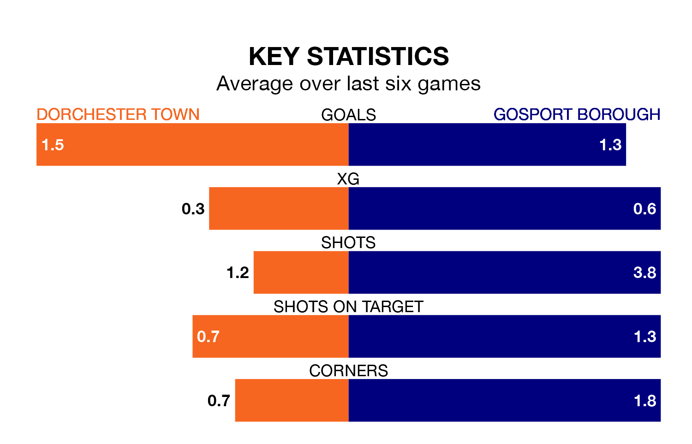

Gosport Borough travel to the Jewson Stadium for Saturday's match against Dorchester Town looking to bounce back from defeat last time out in the Southern League Premier South.
Gosport, who sit third in the league after 27 games, fell to a 2-0 away defeat to Harrow Borough on Tuesday.
They face a Dorchester side who secured a draw in their last match, a 1-1 tie with Hanwell Town, and who sit 19th in the table.
In the last 10 years, Dorchester and Gosport have played each other on 11 occasions. Dorchester won three of them, Gosport one, and they drew seven times.
On average, Dorchester scored 2.2 goals and Gosport 1.5 in those matches.
Their last meeting was on October 11, when they played out a 2-2 draw.
With 39 goals in 27 games so far this season, Dorchester are scoring at below the league average rate with 1.4 goals per game. And they are conceding more than average, letting in 52 goals at a rate of 1.9 per game.
Gosport, meanwhile, are above average scorers, with 1.9 goals per game, compared to a league average of 1.7. They have conceded 1.1 goals per game.
Town are in reasonable form in the Southern League Premier South, with three wins and two draws from their last six games.
With a win and three draws over that period, Borough's form is worse – they have taken six points from 18, compared to the hosts' 11.
Updated: 11:43 (UTC), 08/02/24